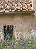

Adventures in Tuscany
This is a short chronicle of my visit to Italy. Click on the thumbnails to see a larger view of each photograph. Enjoy!
Pozzarello
 The house we stayed in was called Pozzarello and it was built around the year 1200 as the home of the gardner who tended the grounds of the adjacent castle. The thick walls kept us nice and cool inside, despite the blistering mid-day heat. This is the view from our bedroom window.
The house we stayed in was called Pozzarello and it was built around the year 1200 as the home of the gardner who tended the grounds of the adjacent castle. The thick walls kept us nice and cool inside, despite the blistering mid-day heat. This is the view from our bedroom window.
The Tuscan Countryside
 This is the scene on the way to Montalcino (all roads lead to Montalcino!). It looks a lot like the scene on the way to Sienna, and the scene on the way to the grocery store. We were surrounded by beautiful countryside for most of our travels.
This is the scene on the way to Montalcino (all roads lead to Montalcino!). It looks a lot like the scene on the way to Sienna, and the scene on the way to the grocery store. We were surrounded by beautiful countryside for most of our travels.
Sienna
 The closest city to our villa was Sienna, about 30 minutes away. We spent many days exploring the steep and crooked streets, sampling the local cuisine at outdoor restaurants, and stopping in the dark and echoey Duomo to escape the sun.
The closest city to our villa was Sienna, about 30 minutes away. We spent many days exploring the steep and crooked streets, sampling the local cuisine at outdoor restaurants, and stopping in the dark and echoey Duomo to escape the sun.
The Cathedral
 A cathedral (French: cathédrale from Latin: cathedra, "seat" from the Greek kathédra (καθέδρα), seat, bench, from kata "down" + hedra seat, base, chair) is a Christian church which contains the seat of a bishop.
A cathedral (French: cathédrale from Latin: cathedra, "seat" from the Greek kathédra (καθέδρα), seat, bench, from kata "down" + hedra seat, base, chair) is a Christian church which contains the seat of a bishop.
Sweet
 Sweet Cake Bake Shop gluten free bakery in Salt Lake City gluten free bread gluten free cupcakes gluten free cookies.Custom Celebration Cakes Baked From Scratch. Wedding, Birthday, Shower Celebration Cakes.
Sweet Cake Bake Shop gluten free bakery in Salt Lake City gluten free bread gluten free cupcakes gluten free cookies.Custom Celebration Cakes Baked From Scratch. Wedding, Birthday, Shower Celebration Cakes.
The Lavender
This is the scene of the door in The Lavender in the countryside. Click on the thumbnails to see the large view. Enjoy!